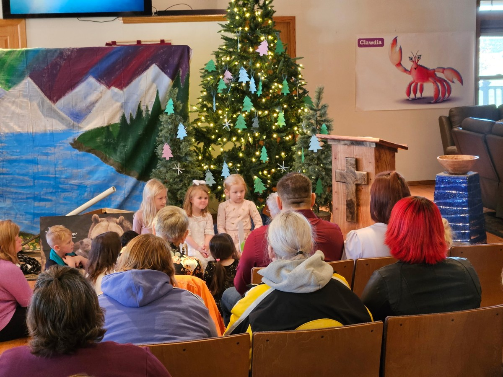
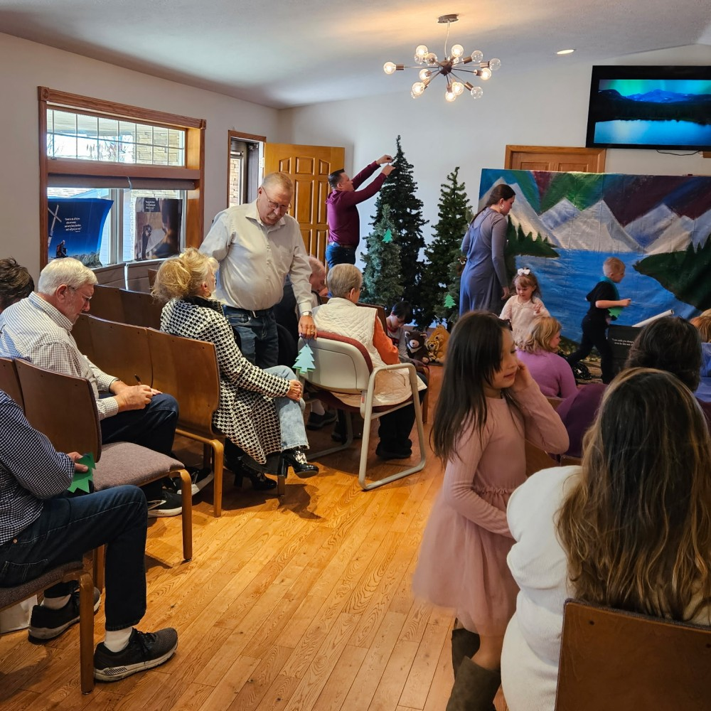
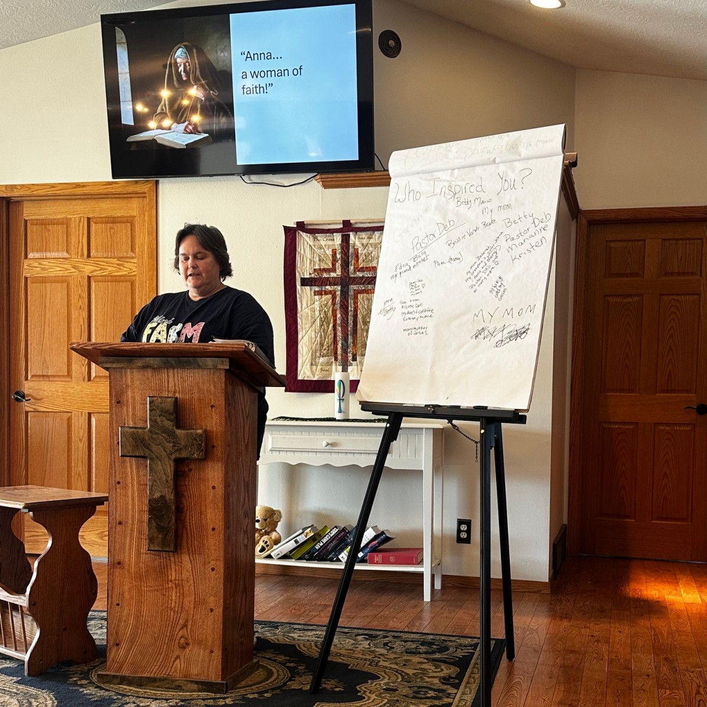
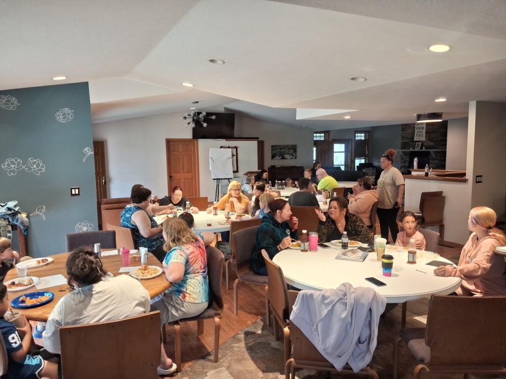
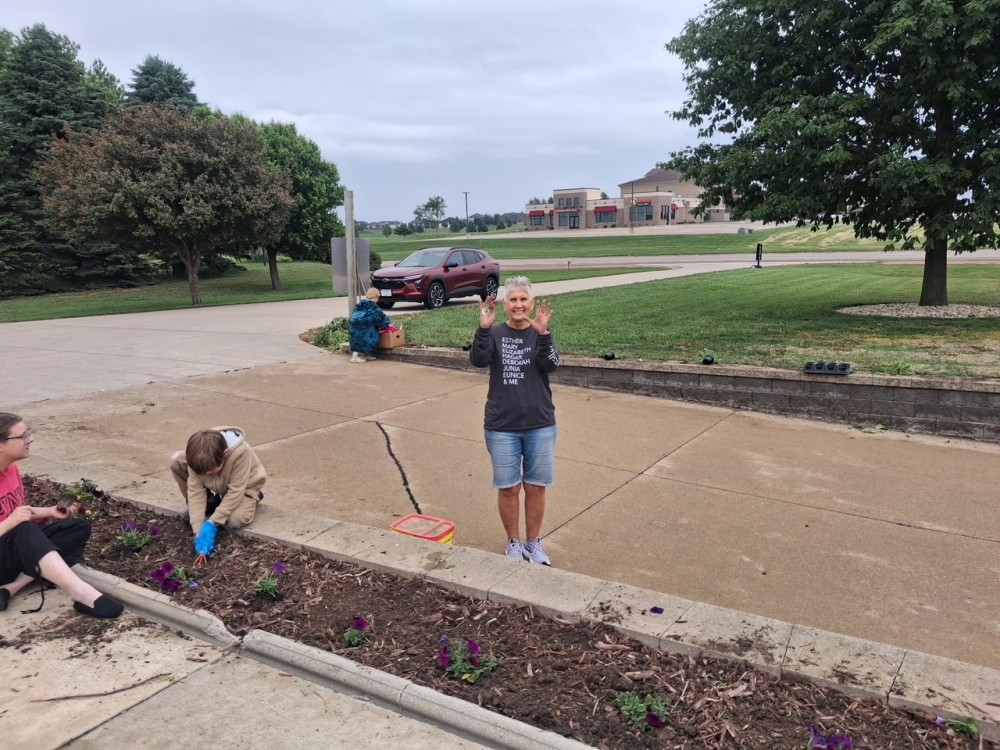

01
Come as you are
You do not need the right clothes, the right words, or a perfect story before you walk through the door.
07 Shop Church
Shop Church is a relaxed worshiping community connected to Whispers. Whether faith feels familiar, complicated, or completely new, you are welcome to join us.

A different kind of church space
Shop Church grew from the belief that sacred space does not have to look polished and neither do the people who gather there. Questions, hard seasons, hope, and ordinary life all belong in the room.
01
You do not need the right clothes, the right words, or a perfect story before you walk through the door.
02
You may know Jesus personally or may not know what you believe yet. Either way, there is room for you.
03
Gather with people from across Northwest Iowa for worship, connection, and a shared life of faith.

How Shop Church began
In December 2020, Pastor Deb Rensink led a four-week Advent series that culminated on Christmas Eve. Conversations about forming a church followed, and worship services began in a machine shed one mile east of Sioux Center.
The shop was practical, imperfect, and welcoming. Its everyday character helped shape a worshiping community where people could meet God without feeling they had to hide the messiness of life.
After Whispers purchased the Talitha Koum property in 2023, Shop Church moved into the campus worship center.
More than Sunday morning



Plan your visit
You are welcome to simply arrive and find a seat. If coming into a new place feels easier with a conversation first, reach out and we will help you know what to expect.